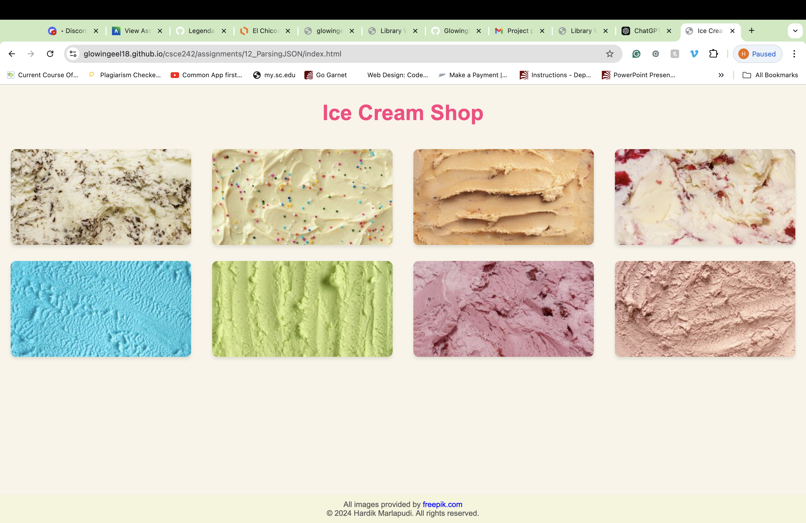
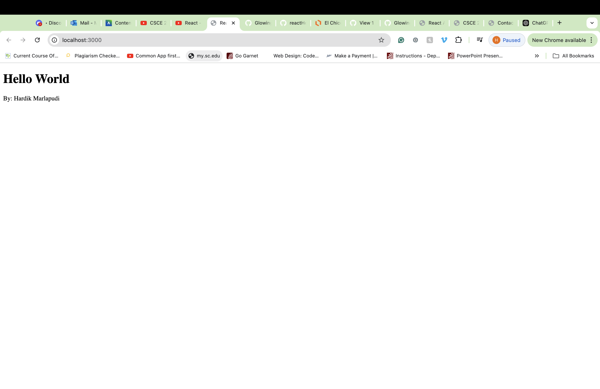
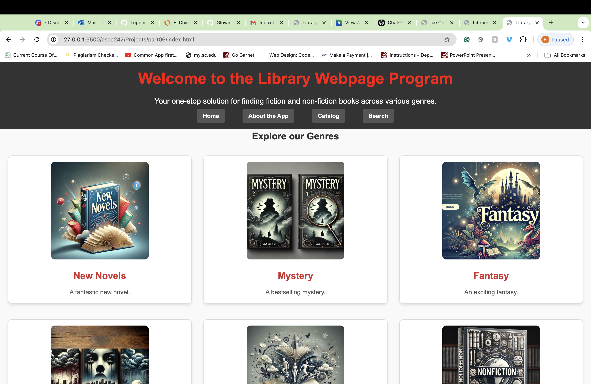
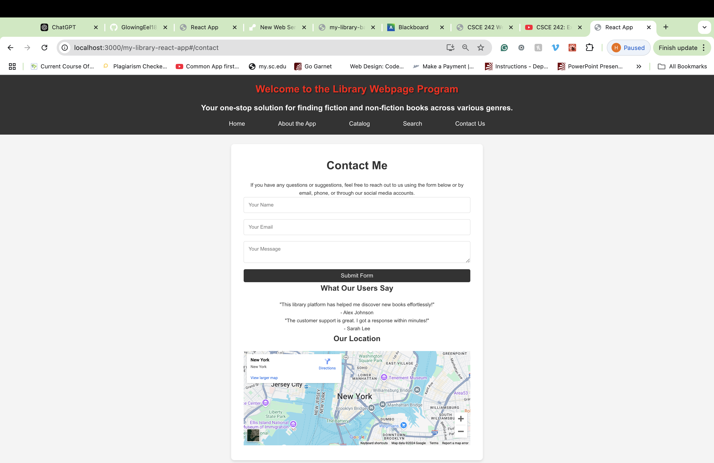
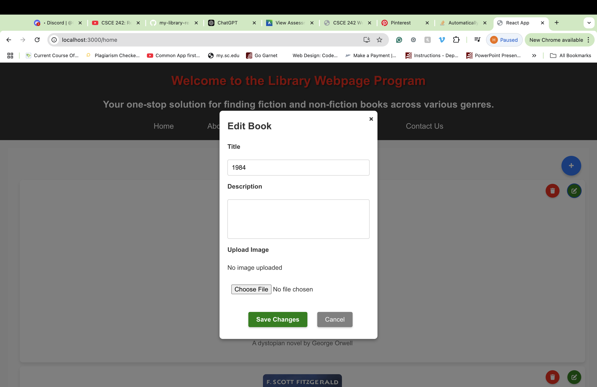
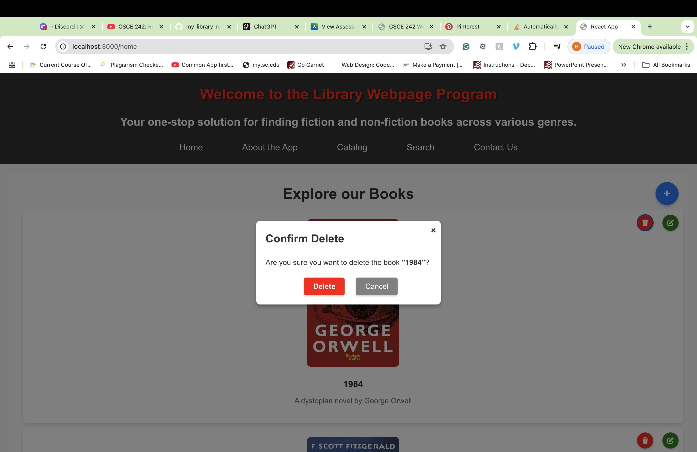
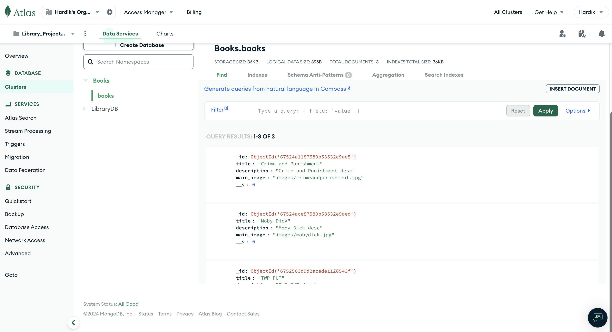
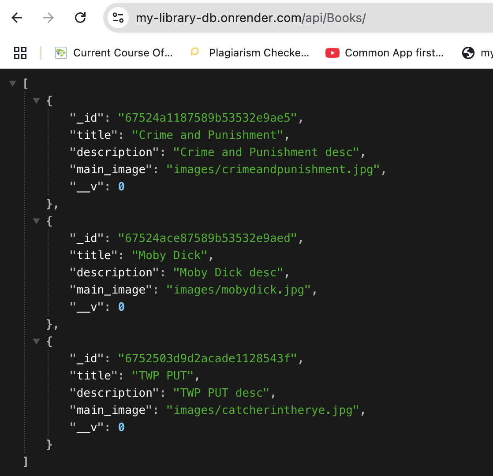
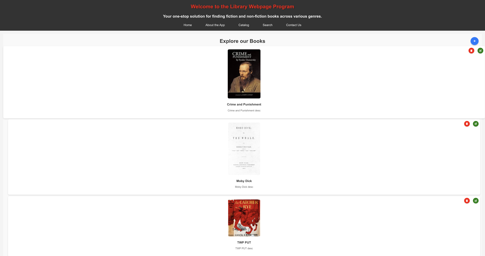

Assignments
Assignment 1: Basic HTML
-
Assignment 1 - Basic HTML

This assignment covers the basics of HTML, focusing on the foundational elements that make up a webpage. It includes an in-depth exploration of the structure of a webpage, the appropriate use of semantic elements to enhance accessibility and SEO, and the process of linking external stylesheets and images to create a visually cohesive and well-organized website. By completing this assignment, students will gain a solid understanding of how to build and structure web pages effectively, setting the stage for more advanced topics in web development.
Assignment 2: Basic CSS
- Assignment 2 - Basic CSS

This assignment, introduces CSS as a powerful tool for styling HTML documents, enabling the transformation of plain web pages into visually appealing and user-friendly interfaces. Topics covered include the use of CSS selectors to target specific HTML elements, the application of various CSS properties to control layout, typography, and color schemes, and the implementation of responsive design techniques using media queries. These skills are essential for creating web pages that adapt seamlessly to different screen sizes and devices, ensuring a consistent and optimal user experience across all platforms. By mastering these concepts, students will be equipped to enhance the aesthetics and functionality of their web projects.
Assignment 3: Page Layout
- Assignment 3 - Page Layout

This assignment, allows students to build Flexboxes and Grid layout systems, two powerful CSS techniques that are essential for building responsive and well-structured web page layouts. Flexbox provides a flexible way to align and distribute space among items within a container, making it ideal for creating dynamic and adaptive designs. Grid, on the other hand, allows for the creation of complex, grid-based layouts that can be precisely controlled and easily adjusted for different screen sizes. By exploring these layout systems, students will learn how to design web pages that not only look great but also maintain their structure and usability across various devices and screen resolutions. This assignment will equip students with the skills necessary to build modern, responsive web designs that are both functional and visually appealing.
Assignment 4: Main Home Page CSS
- Assignment 4: Main Home Page CSS

The main home page's CSS focuses on creating a visually appealing and responsive layout. It uses techniques like Flexbox or Grid to organize elements such as navigation menus, content sections, and footers. The page typically follows a consistent color scheme with defined typography for headings and body text. The navigation menu is styled with hover effects and adapts to smaller screens using media queries. Buttons and links are customized for better interactivity, while the footer is styled to remain at the bottom with contrasting colors. Overall, the CSS ensures a clean, user-friendly design that works well on both mobile and desktop devices.
Assignment 5: Recreate CSS Page
- Assignment 5: Recreate CSS Page

To recreate the CSS for the University of South Carolina (UofSC) website, focus on creating a responsive layout using Flexbox or Grid for the header, navigation, content, and footer. The navigation bar should be styled with hover effects and a mobile-friendly hamburger menu for smaller screens. Use UofSC's brand colors, such as garnet and black, throughout the site, and manage these with CSS variables for consistency. Typography should feature custom fonts, ensuring professional-looking headings and body text. Buttons and links should have hover effects for interactivity, while the footer should have a dark background with organized links. Lastly, apply media queries to ensure the design adapts well to various screen sizes.
Assignment 6: Main Page Projects Section
- Assignment 6: Main Page Projects Section

For Assignment 6, the Main Page Projects Section focuses on displaying various projects in an organized, visually appealing layout. The section should use CSS Flexbox or Grid to arrange the project items, ensuring they are evenly spaced and aligned. Each project may include a title, description, and a link to view more details, with hover effects applied for better interactivity. The design should be responsive, with adjustments made for different screen sizes using media queries. Additionally, the projects should follow a consistent color scheme and typography, ensuring they match the overall aesthetic of the website. This section showcases the work or assignments and needs to be easy to navigate and visually clean, providing users with a clear understanding of the available projects.
Assignment 7: JavaScript Buttons, Functions, and More
- Assignment 7: Introduction to JavaScript

Assignment 7: JavaScript Buttons, Functions, and More focuses on enhancing interactivity within a webpage through the use of JavaScript. This involves creating and styling various buttons that trigger different functions when clicked. These functions may include manipulating elements on the page, such as changing text, modifying colors, or displaying images. The assignment emphasizes the proper use of JavaScript functions to execute specific tasks and introduces basic event handling. Additionally, it covers styling the buttons with CSS, including hover effects, and ensuring the layout is responsive for both small and large screens. This assignment combines HTML, CSS, and JavaScript to improve user interaction and functionality on the website.
Assignment 8: Conditionals
- Assignment 8: Conditionals

Assignment 8: If Statements focuses on using conditional logic in JavaScript to control the behavior of a webpage based on user input or other conditions. The if statements allow the program to execute specific blocks of code only when certain conditions are met. This assignment involves applying if, else if, and else statements to handle different scenarios, such as showing or hiding elements, updating content dynamically, or changing styles based on input values. By incorporating these conditionals, the webpage becomes more interactive and responsive to user actions, demonstrating a foundational understanding of how JavaScript can manage decision-making processes in web development.
Assignment 9: Loops
- Assignment 9: Loops

Assignment 9: For Loops, you are tasked with creating a webpage that allows users to draw stars based on their input, using HTML, CSS, and JavaScript. The user inputs the number of stars they want to draw, and the stars are displayed randomly within a black canvas area. If the user inputs an invalid number (such as a number less than or equal to zero), an error message is shown. Each star is clickable, and when clicked, an alert displays the star's index, indicating which star was clicked. The layout of the page includes a simple interface with input fields, a draw button, and a canvas area where stars appear. The use of for loops is integral to drawing multiple stars, and random placement ensures variety in the positions of the stars on the screen. The assignment also emphasizes the use of modern JavaScript practices, such as arrow functions and proper code formatting. This project combines logical validation, user interaction, and visual design elements to create an engaging, interactive experience.
Assignment 10: Arrays
- Assignment 10: Arrays

Assignment 10: Arrays focuses on utilizing arrays in JavaScript to handle and manipulate data on a webpage. In this assignment, students are expected to create a webpage that dynamically displays information from an array. The array could store a variety of data types, such as numbers, strings, or objects, which are then used to populate the webpage through loops or direct access methods. Students will practice adding, removing, and modifying elements in the array, as well as iterating over the array to display multiple entries. The assignment may include functionalities such as filtering or sorting the array, displaying only specific elements, or allowing user input to interact with the array (for example, adding or removing data). The goal of the project is to enhance students' understanding of how arrays work in JavaScript and how to manipulate them to build dynamic, interactive web pages. The assignment emphasizes proper use of array methods, efficient iteration techniques, and clean code formatting.
Assignment 11: JavaScript Classes
- Assignment 11: Classes

In Assignment 11, you are tasked with creating a webpage that displays a list of items (in this case, birds), using JavaScript classes to manage the data. Each item (bird) should have at least six different attributes, such as name, species, image, habitat, diet, and size. You will display this information dynamically on the webpage, using JavaScript to manipulate the Document Object Model (DOM).
Assignment 12: Parsing JSON files
- Assignment 12: ParsingJSON 
In Assignment 12, your task is to parse a JSON file and display its content. You will read the JSON data, extract the relevant information, and convert it into a format that can be presented effectively. The goal is to demonstrate your ability to work with structured data formats like JSON, while also showcasing how you can dynamically render and display the parsed content. This process typically involves using libraries or built-in functions to read and manipulate the JSON file, and finally outputting the processed data in a meaningful way.
Assignment 13: Server Side HelloWorld
 Code Repo
Live Demo
Code Repo
Live Demo
This assignment focuses on setting up a basic "Hello World" server-side application using Node.js and deploying it through Render. The student is required to first download and install Node.js, create an account on Render, and then set up a GitHub repository for their Hello World server app. After setting up the repository and developing the server application, students must test it locally to ensure it runs correctly before deploying it on Render's platform.
Assignment 14: React Hello World
 React HelloWorldFor this assignment, the goal is to create a "Hello World" React app, following a provided instructional video. After setting up a new React project and creating a public GitHub repository, the task is to clean up unnecessary default files generated by React (such as excess components, styles, and assets) to keep the project minimal. The cleaned-up version of the app should display a custom message instead of the default content. The assignment serves as an introduction to React's environment, components, and project structure, emphasizing the importance of keeping codebases concise. It helps students understand how to create basic React applications, set up repositories, and manage their project files effectively.
- Assignment 2 - Basic CSS
Projects
-
Project Part 1: Topic Selection
Project Part 1: Topic Selection
Project Part 1: Topic Selection focuses on identifying and selecting a topic for the project that will guide the development process. The chosen topic should be relevant, feasible, and align with the projects goals and objectives. This phase involves brainstorming potential ideas, considering the scope, and ensuring the topic is appropriate for the project’s intended audience or purpose. Additionally, it’s important to clarify the topic’s key components, such as its features or functionality, and how it will be implemented in future stages. Topic selection is crucial as it lays the foundation for the project's direction and overall success.
-
Project Part 2: Wireframes
Project Part 2: Wireframes
Project Part 2: Wireframes involves creating visual blueprints for the website or application layout, focusing on the structure and placement of key elements. Wireframes serve as a guide for the design and functionality of each page, showing how content like text, images, buttons, and menus will be organized. This step emphasizes simplicity and clarity, typically using black, white, and gray shades to avoid distractions from the layout itself. Wireframes help in ensuring consistency, alignment, and usability across the project, allowing stakeholders to visualize the interface before moving on to the design or development stages. They are essential for planning user experience (UX) and ensuring that all components are logically arranged.
-
Project Part 3: HTML and CSS
Project Part 3: HTML and CSS
Project Part 3: HTML and CSS focuses on transforming the wireframes into a functional web structure using HTML for content and CSS for styling. In this phase, the HTML is responsible for organizing the website's structure, defining headings, paragraphs, images, and links. CSS is applied to enhance the visual design, ensuring that elements like colors, fonts, and layout reflect the desired look and feel. The use of Flexbox or Grid helps create a responsive layout that adapts to various screen sizes. CSS variables may be used for consistency in colors and styling across the site. This phase is critical for creating a visually appealing, well-structured, and responsive website based on the initial wireframes.
-
Project Part 4: Colors, Pictures, and Text
Project Part 4: Colors, Pictures, and Text
Project Part 4: Colors, Pictures, and Text focuses on enhancing the visual and content elements of the website by integrating appropriate colors, images, and text. In this phase, the color scheme is carefully selected to ensure visual consistency, accessibility, and alignment with the project’s theme or brand. Images are added to make the site more engaging and relevant, while ensuring they are properly optimized for fast loading times. The text content is finalized and placed within the layout, paying attention to readability, font choices, and proper alignment. This phase brings the site to life by combining aesthetic and functional elements, making the website visually appealing and user-friendly while maintaining the projects overall design goals.
-
Project Part 5: Improve Your Website
Project Part 5: Improve your Website
In Project Part 5: Iteration and Improvement, you will focus on addressing feedback provided by your instructor, TA, and classmates to enhance the visual and structural elements of your website. The key tasks for this phase include refining colors, images, and text to align with the design and functional expectations of the project. First, you will adjust the color scheme to ensure consistency and accessibility throughout the site, making sure the colors enhance readability while maintaining a cohesive design that fits the overall theme. Next, you'll add relevant and engaging images that make the website more visually appealing, ensuring that all images are optimized for fast loading without compromising quality. Proper alignment and padding should also be applied to avoid visual clutter. In addition, the text content will be finalized, paying close attention to formatting, alignment, and readability. This includes ensuring that the chosen fonts, text size, and spacing provide a user-friendly reading experience. Any significant issues with text alignment or font inconsistencies should be corrected during this phase. The overall goal of this iteration is to ensure that your website is not only visually appealing but also functional and accessible. Your final version should reflect a professional-quality website that is easy to navigate and aesthetically pleasing.
-
Project Part 6: JSON File Parsing
Project Part 6: JSON File In Project Part 6: JSON File, you are required to build upon the work done in previous project parts by incorporating the use of JSON data and dynamically displaying the content on your website. You will create a JSON file that contains a list of at least 8 items related to your website’s topic. Each item in the JSON file will have several fields: a unique ID (_id), a relative link to an image stored on the site, an array with at least three pieces of information (such as chapters, authors, etc.), and at least four other fields of information relevant to the item. The images for each item should be placed in an 'images' directory on your website, and their links should be relative paths.
-
Project Part 7: Adding a Contact me page

In Project Part 7, the task involves implementing a client-side form validation and submission process using HTML and JavaScript. The project requires creating a "Contact Me" form that allows users to send an email when the form is properly filled out. The form should include proper HTML validation for fields like name, email, and message, and display success or error messages based on submission status, all handled asynchronously without redirecting the user to another page. Additionally, the project includes embedding an iframe, such as a Google map or YouTube video, that adjusts responsively for different screen sizes, ensuring a visually appealing layout. The design must maintain professional alignment and be fully responsive across all devices. Lastly, the project needs to be linked from the main project section of the course website for easy navigation.
-
Project Part 8: React Site Components and Pages
Project Part 8: Building the Library Webpage in React
Project Part 8: Building the Library Webpage in React (Project Part08 React repo)
Project Part 8 involves converting your existing project site into a React application, hosted as a GitHub Pages site. The assignment requires creating a new GitHub repository specifically for this React project, where you will build the site from scratch. This React site must include all existing pages, styles, and images from your original project, and it should be organized into distinct pages and components. Each component and page should have its own associated stylesheet, where applicable, to ensure a modular structure. The project site must be fully responsive, adapting seamlessly to different screen sizes, with a menu that adjusts to display vertically on smaller resolutions. Additionally, list items should be organized into reusable components, preparing them for dynamic content when the data will later be pulled from JSON files. While the current focus is on establishing the React structure, forms, toggle navigation, iframe embedding, and JSON data fetching are not required for this part of the project. The completed React application will then be deployed as a static website on GitHub Pages, and a link to the site should be added to the project section of your main 242 home page. This assignment emphasizes organizing a site using React components, achieving responsive design, and deploying a React site as a GitHub Pages project.
-
Project Part 9: React Site More JavaScript
Project Part 9: Building the Library Webpage in React (Project Part08 React repo)
Project Part 9: Node Express server API
Project Part 9: BackEnd server repo
Project Part 9: Client side Github repo
Project Part 9 deployed Github site: Library Webpage Program along with the Contact Me form

In Project Part 9, the goal is to convert your existing project site into a fully functional React application with enhanced interactivity and backend integration. You’ll address any issues from previous parts, ensuring a polished and responsive design across devices. Key additions include a contact form, a working toggle navigation, and the ability to pull live data from an Express server hosted on Render. This server will store data as an array (previously JSON), which the React front end can fetch dynamically. The project requires you to break down the site into well-organized pages and components, with individual stylesheets where needed. Additionally, the server should display a styled index.html page documenting available API endpoints, allowing users or developers to understand and interact with the data sources effectively. This project emphasizes the integration of client-side and server-side technologies to create a seamless and responsive user experience.
-
Project Part 10: Post Request
Project Part 10: This is Link to the server side code on github
Project Part 10: Link to the Render server site
Project Part 10: Link to the Client side Github repo
Project Part 10: This is the Link to my client side website
In this project, the client and server will work together to create a seamless and user-friendly experience for posting and managing new data. React's state management and validation capabilities will ensure a responsive and consistent front-end, while the server-side Joi validation and POST endpoint will maintain data integrity and reliability. By linking the client and server effectively, this project demonstrates a cohesive approach to building modern, full-stack web applications.
-
Project Part 11: POST and DELETE Request
Project Part 11: This is Link to the server side code on github
Project Part 11: Link to the Render server site
Project Part 11: Link to the Client side Github repo
Project Part 11: This is the Link to my Client side website 

In Project Part 11, you will enhance your Library Webpage Program by adding Edit and Delete functionalities for managing the list of books. This involves implementing features on both the client and server sides. On the client side, you will use React to create a seamless user experience by incorporating properties, state, and components effectively. Users will be able to edit or delete items using a form, which will include client-side validation that aligns with the server-side Joi validation. When a user successfully edits an item, the updated data will be displayed immediately without requiring a page refresh, reflecting the changes dynamically. Similarly, when an item is deleted, it will be removed from the list upon receiving a successful response from the server. A state variable will indicate the success of these operations, ensuring clear feedback for the user. All components and the interface should be styled and integrated cohesively for a polished look. On the server side, you will build upon your existing Node.js and Express repository by adding PUT and DELETE endpoints. These endpoints will validate the data using Joi, perform the necessary updates or deletions in the data array, and return a response indicating whether the operation was successful. Together, these features aim to create a robust, interactive, and user-friendly system for managing the library's book data.
Project Part 7: Client Side Form validation and JavaScript
Project Part 12: Server CRUD MondoDB
Project Part 12: The link to my server side code on githubProject Part 12: The link to my render server site
Project Part 12: The link to my client side code
Project Part 12: The link to my client server site



The objective of Project Part 12 is to enhance the server-side functionality of the Library Webpage Program by integrating MongoDB for persistent data management. This involves installing necessary MongoDB extensions, establishing a connection to the database, and designing a schema to structure the data effectively, including a field for uploading pictures. Using this schema, the project requires implementing CRUD operations—POST, PUT, and DELETE requests—to allow users to create, update, and remove data while ensuring these changes are stored persistently. Data validation will be maintained using Joi to guarantee accuracy and consistency. Additionally, the project includes enabling picture uploads that remain functional throughout the session, even if they do not persist after a server reload due to the limitations of the free hosting plan. As this is the final deliverable, both the client-side and server-side code must be fully integrated and functional, providing a seamless and robust user experience.